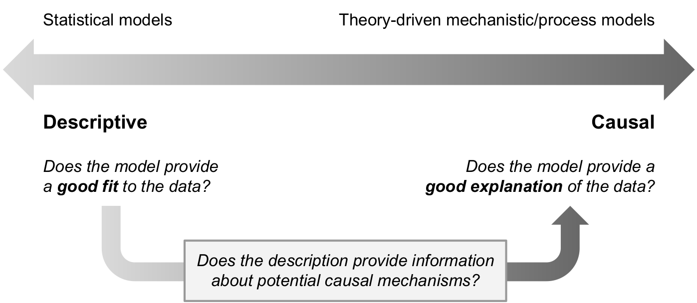

1 Introduction
Understanding the mind is ultimately about understanding a dynamic system comprised of a large set of elements that interact in complex ways. If we had designed the mind, things would be easier: Like a car, a computer, or some other piece of modern machinery, we would have built different parts for different functions and stuck them together in a way that would make it easy for us to repair and reconfigure the system. In reality, things are not so simple. Because the mind is not human-engineered (or really “engineered” at all!), for us mere humans to understand it requires us to reverse-engineer the mind. In other words, we have to see what the mind does in some particular situation, build a particular type of machine—a model—that we hypothesize operates like the mind does, and then put the machine in that same scenario and see whether it acts like a human mind. To the extent that our model acts like a human in that scenario, that gives us reason to believe that the model is operating in some sense “like” a human mind does in that scenario.
In the early days of scientific psychology, our tools for building models of complex dynamical systems were quite limited. We could build physical models, but these are constrained by the physical properties of the materials we use (nonetheless, it is worth noting that mechanical model of attention by Broadbent (1957) is designed in such a way that the physical properties of the model capture important psychological constraints). Purely mathematical models may not have been so strongly constrained by physicality, but when considering situations with many interacting elements or when stochastic noise is involved, mathematical models quickly become intractable (consider the insoluble “three body problem”—even with a complete model of such a system, we cannot derive its future behavior analytically). As a result, early psychology was dominated by behaviorism, which eschewed the development of theories of the mind and contented itself merely with observing and cataloging behavior.
It was not until the middle of the twentieth century, when modern computers began to become of use, that the possibility of “reverse-engineering the mind” became a reality. This was the time of the “cognitive revolution” (Neisser, 1967). The revolution came about for both technical and conceptual reasons.
From a conceptual perspective, computers offered a productive metaphor for helping us understand how the mind works. A computer uses the same physical substrate to perform different functions, similar to how the same brain lets us both speak and play piano. A computer’s adaptivity comes from the fact that the computer can run different “programs” on its hardware. A program is a set of procedures that take a set of “inputs” and transform them into “outputs”. This is analogous to how a living organism decides to act in a certain way (its “outputs”) depending on its goals and on the environment it happens to be in (its “inputs”). Meanwhile, the procedures that transform a computer’s inputs into outputs often involve intermediate steps that do not themselves produce observable behavior but which are nonetheless represented by changes in the internal state of the computer. These internal states are analogous to thoughts or beliefs in that they may not be externally observable, but they are critical steps on the path toward taking an action. The computer metaphor thus enables us to understand cognition in terms of how internal states of mind represent aspects of an organism’s environment, goals, and thoughts in such a way that these representations can be processed to yield behavior that is appropriate to the situation the organism is in.
From a technical perspective, computers offer a way to derive predictions from complex models that would not have been tractable otherwise. As we shall see, this is particularly valuable for two applications: First, we can use the computer to simulate what a model would do and thereby understand the distribution of possible actions it can take. This obviates the need to derive predictions through mathematical analysis or logic, which though powerful, can only be applied to simple models. Second, we can use the computer to fit a model to data. Almost all models have parameters which can be thought of as “knobs” or “settings” that adjust the kind of behavior the model produces. To “fit” a model means to find the parameters for that model that get it to generate behavior that is as close as possible to the behavior recorded in a dataset. Except for very simple models, it is impossible (or at least very impractical) to try to fit them to data without a computer. But as we shall see, fitting a model is useful because we can infer from the best-fitting parameters something about the person who produced the data to which the model was fit.
In summary, computers made it feasible for cognitive psychologists to “reverse-engineer” the mind because they (a) provided a valuable conceptual metaphor that allowed theories of cognition to be posed in the form of computational models comprised of internal representations and processes applied to those representations; (b) enabled predictions to be derived for models that were complex and/or had stochastic elements; and (c) enabled those same kinds of models to be “fit” to data so that model parameters can give insight into how a person performed the task for which data was recorded.
There is an important difference between “reverse-engineering” a natural system, like the mind, from reverse-engineering a human-designed system like a car. Because a natural system was not “engineered”, the models we devise are not guaranteed to work the same way as a natural system, even if the model accurately mimicks the behavior of the natural system in the cases we study. The purpose in “reverse-engineering” the mind is not to build a duplicate mind, it is instead to “translate” a complex system into a form that enables us to understand it better. The model is a deliberate simplification which we expect to deviate from reality in many ways. What we hope is that we arrive at a model that helps us understand the key features of a natural system well enough for us to understand why it acts the way it does in specific situations (for further discussion of the purposes of models in psychology, see Cox & Shiffrin, In press; Singmann et al., 2022).
1.1 In this workshop
With that high-minded philosophical stuff out of the way, the purpose of this workshop is to see how to use computational cognitive models of a particular ilk. These are models that are designed to account for two aspects of behavior: choice and response time (RT). These models are applied in situations where a person (or other organism!) has to decide between a small number of possible alternatives, often just two. Such situations abound in experimental psychology, including lexical decision, recognition memory, detection tasks, search tasks, categorization tasks, etc. The models are designed to help us understand two things:
- Why did a participant make the choices they made?
- Why did it take the participant a certain amount of time to make the choices they made?
For the purposes of this workshop, we will focus on models of choice and RT called diffusion models.
1.1.1 Key theoretical constructs
The vast majority of models of choice and RT, including diffusion models, address the two questions above by invoking four basic theoretical constructs:
Evidence accumulation: Choosing from among a set of options is assumed to require accumulating “evidence” that weights either in favor of or against each option. This evidence may come from perception (e.g., deciding which of two stimuli is brighter), from memory (e.g., deciding whether an item was or was not on a previously-studied list), or from deliberation (e.g., deciding which of two products to buy). As such, the idea that decisions are made by accumulating evidence helps explain not only which choice was made (it was the option that was most favored by the accumulated evidence) and how long it took to made the choice (the time needed to accumulate sufficient evidence to commit to a decision).
Response caution: If decisions are made by accumulating evidence, there must be a policy that terminates the accumulation process, otherwise someone would keep accumulating evidence forever. This is the idea behind the construct of “response caution”, which is that, depending on the situation, people may adopt a policy of deciding quickly on the basis of very little evidence (low response caution) or deciding slowly by waiting for more evidence to accumulate (high response caution). Thus, this construct is directly related to the idea of speed-accuracy trade-off.
Response bias: It may be that a decision maker is willing to commit to some options more readily than others; in that case, we say they are “biased” in favor of some responses. Typically, this bias is modeled by assuming less response caution for some options than others. In other words, a participant may be willing to commit to some decisions on the basis of less accumulated evidence than others.
Residual time: The time needed to accumulate sufficient evidence to make a decision is not the only thing that contributes to observed response times. After all, it takes time to realize that a trial of a task has actually begun. It may also take time to retrieve relevant information from memory, to focus attention on relevant features in the environment, or to evaluate a potential outcome. Finally, it takes some time to execute the motor actions associated with the chosen option (e.g., to press a button, move a lever, etc.). The time for all of these additional processes is often called non-decision time (NDT) or encoding and response execution time (\(T_{ER}\)). However, I prefer to call it simply “residual time” because that is what it is—it is the time “left over” besides the time needed for evidence accumulation.
1.1.2 Models and parameters
The models we will encounter have parameters that pertain to each of the four constructs just described. We will see how differences in the values of these parameters result in different patterns of behavior from the model. This is also how the models are “fit” to data—by finding the combination of parameter values that produces behavior that most closely resembles that produced by a participant in some task. The value of doing this is that it helps us understand why that participant acted the way they did. For example, we might want to know whether someone was fast because they were able to quickly accumulate the evidence they needed, because they were uncautious, because they were biased, or because they could execute motor actions quickly. We can address that question by finding the values of the parameters associated with each construct that best fit their observed performance.
1.1.3 Tasks amenable to choice/RT models
In this tutorial, we will primarily focus on tasks that involve choosing between two options. As a result, each trial of such a task produces a choice (which option was picked) as well as a response time (how long it took to pick that choice). Framed this way, it may seem like these models are only applicable to certain kinds of decision tasks, but in fact two-choice tasks of this kind abound in the psychological literature and in real life:
- Is a person or object a member of some category or not? (a categorization task)
- Which of two products should I buy? (a common decision task)
- Should I take a risky gamble or a sure thing? (a common judgment and decision making task)
- Have I ever seen this thing before? (a lexical decision task)
- Did I encounter a person or thing in a specific context or not? (a recognition memory task)
- Are two items the same or different? (a same-different judgment)
- Is a person or object present in a scene or not? (a visual search task)
- Should I watch the next episode in a series or not? (no really, Netflix is using diffusion models to understand these kinds of decisions)